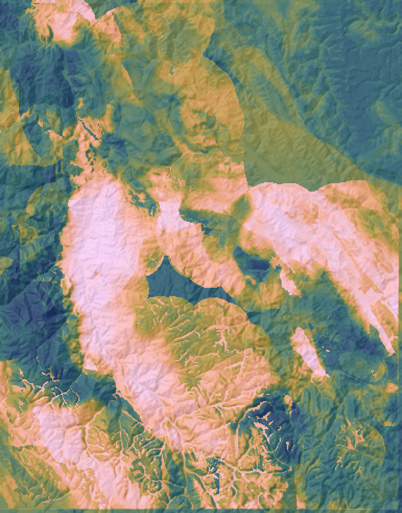
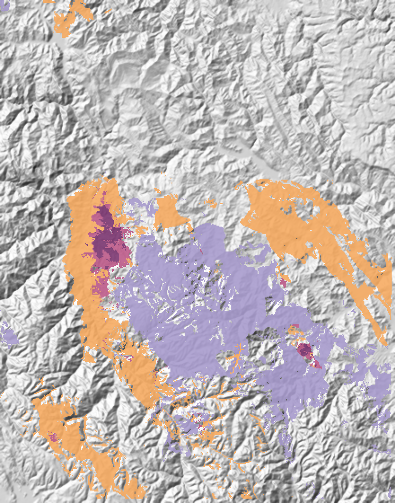

GEOLOGÍA / GEOQUÍMICA / GEOCOMPUTACIÓN
Carlos Manuel
Gutiérrez Cruzado
Ingeniería Geológica, PUCP. Prospectividad mineral de uranio y tierras raras con datos públicos, Python y aprendizaje automático.
 1Relieve
1Relieve
2Favorabilidad U
3Zonas U + REECORDILLERA ORIENTAL / PERÚ CENTRAL